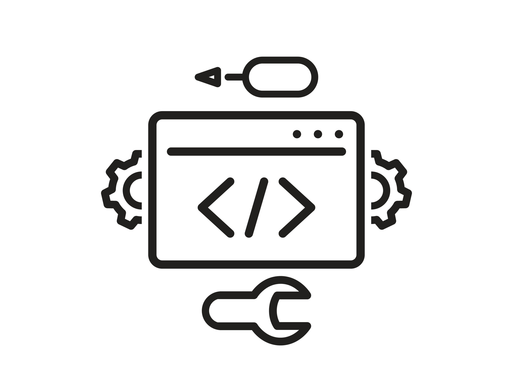
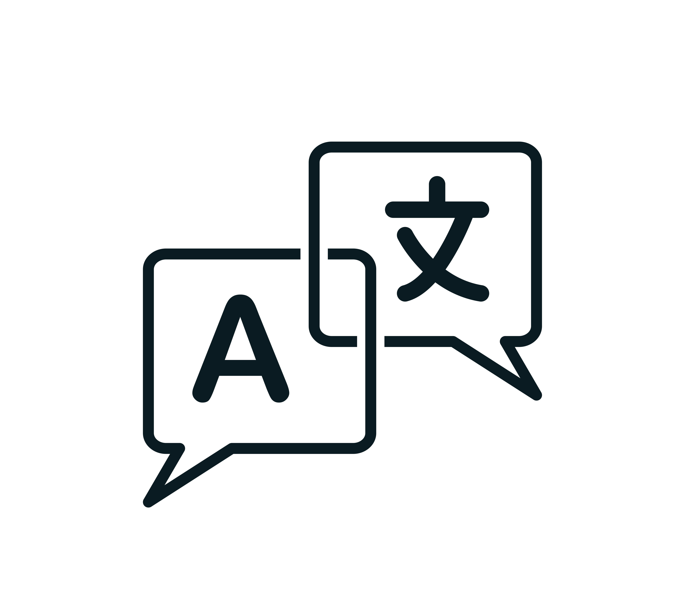

Intro
Hi, my name is Lucas Bendix Jolibois! I am 19 year old multimedia design student at Zealand Academy of Technologies and Business, and I'm ready for a new challenge.
My Skills
-

Web Development
HTML and CSS are my strengths within web development
-
SoMe
Socail media algorithm, content creation, digital marketing etc.
-
UX & UI design
User experience and user interface in Abobe XD
-
Photography & videography
Photography & videography for content creation, product showcase, portrait photography, cinematic montages and more
-
Graphic deisgn & photo editing
Graphic design (as logos, web etc.) and photo editing with adobe programs
-

Languages
My mother tongs are Dansih and French, and i'm also fluent in English. Used to work in an international environment.
Zealand- MULTIMEDIE DESIGNER: FROM: AUGUST 2020 TO NOW
I am currently studying at an educational institution called Zealand in Køge in which I am studying multimedia designer. During education, we work professionally with the design and development of web solutions, digital solutions and learn about communication on social media, digital video, programming as well as innovation and idea development.
NEXT-VIBENSHUS GYMNASIUM- HTX- COMPUTER SCIENCE: FROM: AUGUST 2017 TO JUNE 2020
I studied at a highschool called Vibenshus gymnasium- HTX in Østerbro from 2017 to 2020. At the highschool i studied Computer Science which is a educational direction where you put both your Communication and IT skills at stake. Here you learn to program, solve problems that can occur in your daily life, workplace or in the near future. I therefore have alot of knowledge and experience in IT and communication.
NIELS STENNSENS GYMNASIUM- PRIMARY SCHOOL:
Niels Steensen, is a school where you learn to respect each other. They were very much in favor of treating someone as you can want to be treated yourself, and must always be positive. In addition, we also had Chinese where you learn about the Chinese culture and language.
PRIS HENRIK SKOLEN (LYCEE PRINCE HENRIK) - PRIMARY SCHOOL:
Prince Henrik School is a French school in which you learn to communicate in several different languages: French, Danish and English. This is a school where you learn to show up on time, to be structured and to be very international. In this education / school I have learned to communicate with people across different nationalities and to be fluent in French.